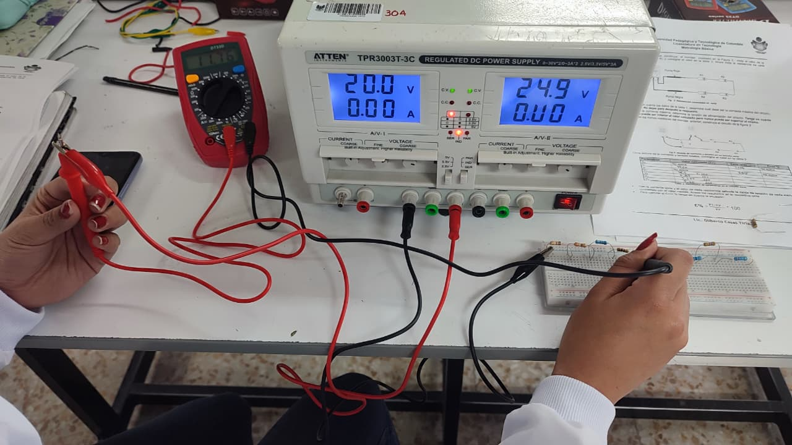
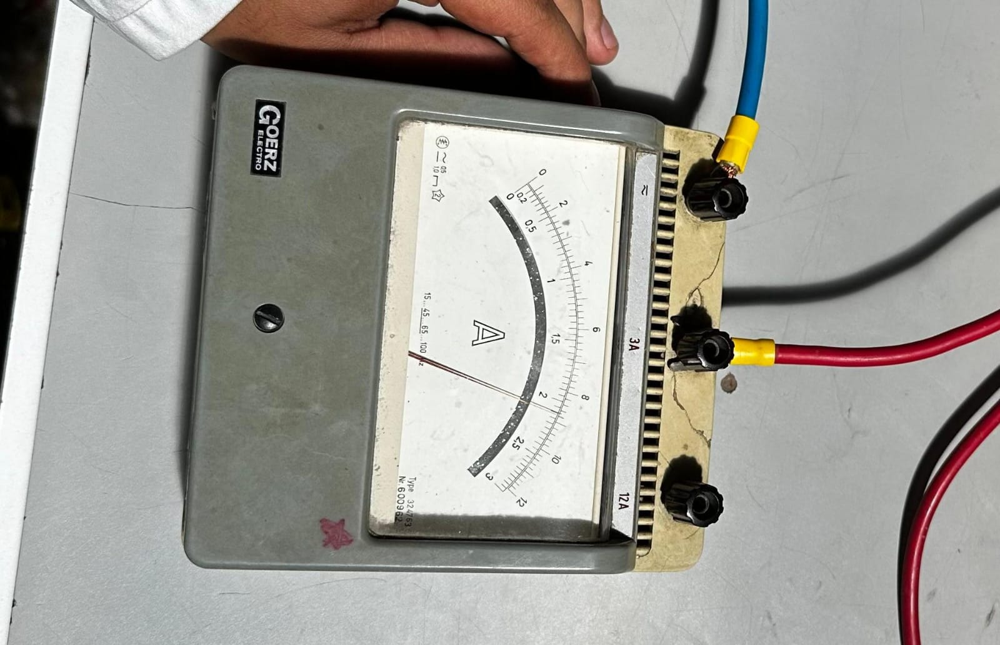
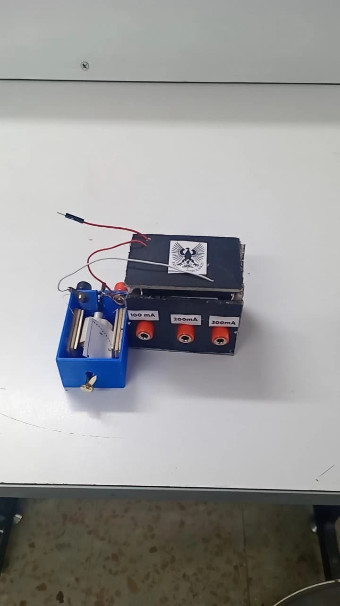
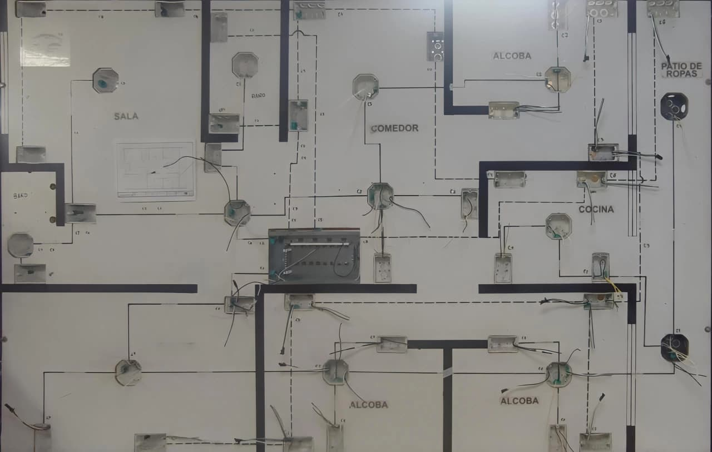

LICENCIATURA EN TECNOLOGÍA
LICENCIATURA EN TECNOLOGÍA
3. Laboratorio Instalaciones y Metrología

¿Qué es un laboratorio de Instalaciones y Metrología?
En la Universidad Pedagógica y Tecnológica de Colombia (UPTC), los espacios de laboratorio de Instalaciones y Metrología permiten que los estudiantes relacionen los conocimientos teóricos de la electricidad, las mediciones y los sistemas eléctricos con actividades prácticas.
Estos espacios son importantes en la formación de los estudiantes de Licenciatura en Tecnología, porque permiten desarrollar habilidades para medir, comprobar, construir, analizar y comprender diferentes procesos tecnológicos.
Aunque Metrología e Instalaciones están relacionadas con la electricidad y la tecnología, cada una tiene una finalidad diferente:
Laboratorio de Metrología

El laboratorio de Metrología es un espacio donde se estudia la ciencia de las mediciones. Allí se aprende a utilizar diferentes instrumentos para medir magnitudes físicas y eléctricas, verificar su funcionamiento y determinar qué tan confiables son los resultados obtenidos.
Su propósito es que los estudiantes comprendan la importancia de realizar mediciones correctas, reconocer los errores que pueden presentarse y verificar que los instrumentos estén funcionando adecuadamente.
¿Qué se puede hacer en el laboratorio de Metrología?
Mediciones eléctricas
Se utilizan instrumentos como el multímetro para medir diferentes magnitudes eléctricas.
Ejemplos de prácticas:
- Medición de resistencia eléctrica en resistencias de diferentes valores.
- Medición de voltaje en corriente continua y alterna.
- Medición de corriente eléctrica.
- Pruebas de continuidad.
- Comprobación del funcionamiento de diodos y LED.
- Comparación de los valores teóricos con los valores medidos.
Calibración de instrumentos

La calibración consiste en comparar las indicaciones de un instrumento con los valores proporcionados por un patrón de referencia, bajo condiciones establecidas.
Ejemplos de prácticas:
- Calibración de un amperímetro.
- Calibración de un voltímetro.
- Comparación de un multímetro digital con un instrumento patrón.
- Registro de diferentes mediciones.
- Cálculo del error absoluto y relativo.
- Análisis de la incertidumbre de las mediciones.
Construcción de un galvanómetro

El galvanómetro es un instrumento utilizado para detectar y medir pequeñas corrientes eléctricas mediante el movimiento de una aguja indicadora.
En el laboratorio se puede realizar un proyecto de construcción de un galvanómetro de bobina móvil para comprender cómo funciona este instrumento.
Laboratorio de Instalaciones Eléctricas

El laboratorio de Instalaciones Eléctricas es un espacio donde los estudiantes aprenden cómo funcionan, se diseñan y se construyen los sistemas eléctricos utilizados en viviendas, edificios y diferentes espacios.
En este laboratorio se trabaja con conductores, cables, tuberías, cajas, interruptores, tomacorrientes, protecciones eléctricas y tableros de distribución.
Su finalidad es comprender cómo se distribuye la energía eléctrica, cómo se realizan las conexiones y qué elementos permiten que una instalación funcione de manera segura.
¿Qué se puede hacer en el laboratorio de Instalaciones?
- Reconocimiento de materiales y elementos eléctricos.
- Realización de empalmes eléctricos.
- Instalaciones de iluminación.
- Instalación de tomacorrientes.
- Construcción de un tablero eléctrico.